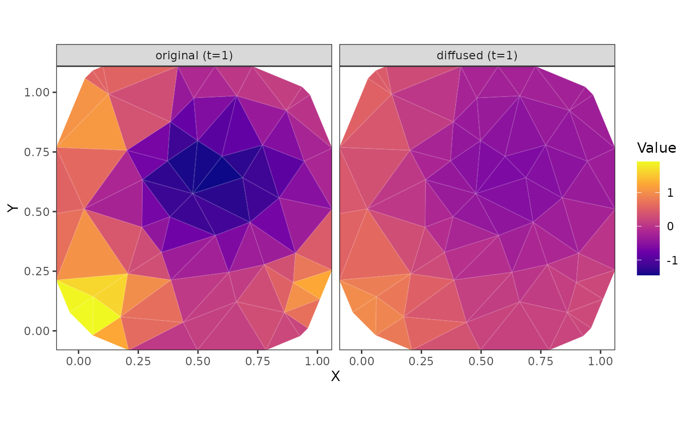
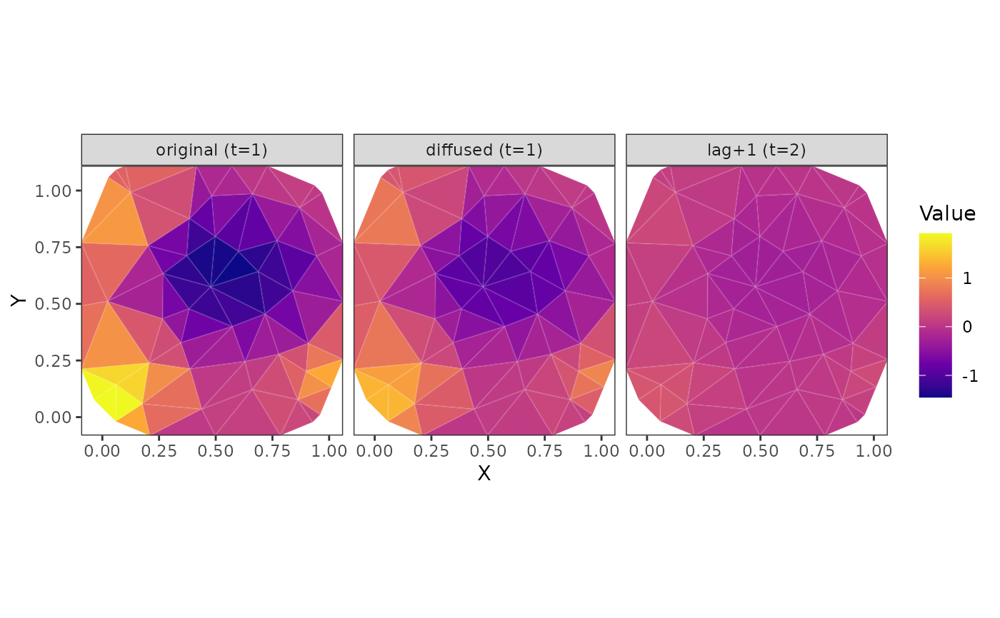
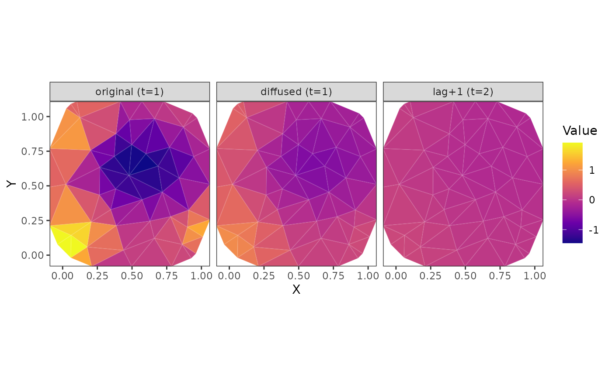
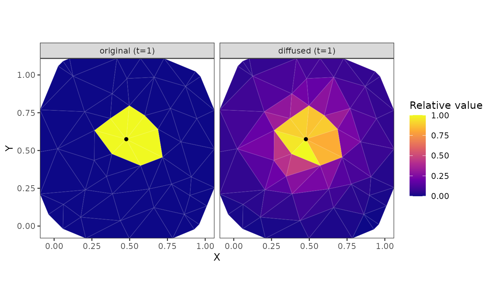
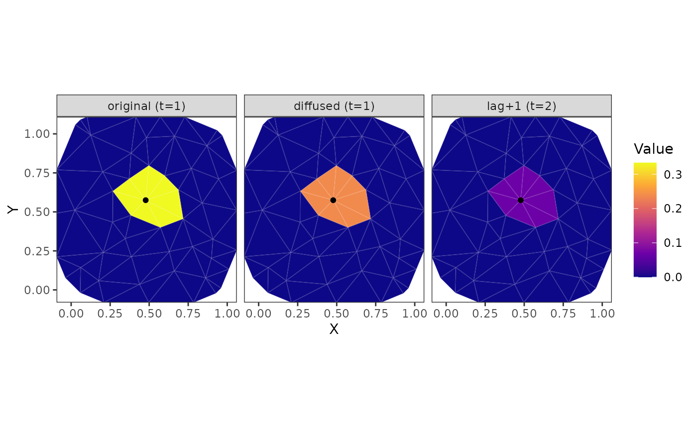
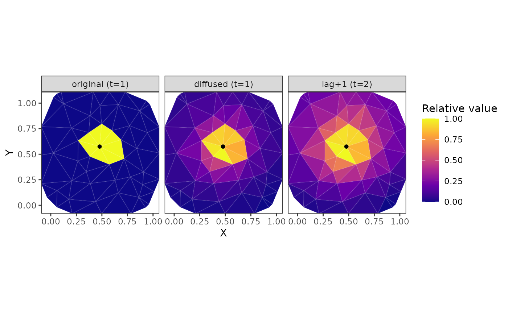

Plot Covariate-Diffusion Diagnostics on the Mesh
Source:R/covariate-diffusion.R
covariate_diffusion_plots.RdVisualize fitted covariate-diffusion transforms or impulse-response kernels for one selected covariate-diffusion term. Values are plotted as colored mesh triangles, so no prediction grid is required.
Usage
plot_diffused_covariate(
object,
covariate = NULL,
component,
time_value = 1,
n_steps = 1L,
common_scale = TRUE,
plot = TRUE
)
plot_diffusion_kernel(
object,
covariate = NULL,
component,
time_value = 1,
n_steps = 3L,
common_scale = FALSE,
plot = TRUE
)Arguments
- object
A fitted
sdmTMB()model withcovariate_diffusion.- covariate
Optional covariate name from
covariate_diffusion. Required when multiple lag covariates were fitted.- component
Covariate-diffusion component name. Must be one of
"space","time", or"combined"."combined"plots the joint response of all covariate-diffusion components fitted forcovariate.- time_value
Optional time slice to plot or use for the impulse. Supply either a modeled time value or a 1-based time index. Defaults to 1.
- n_steps
Number of transformed slices to plot starting at
time_value.- common_scale
Should plotted panels share a common color scale? Defaults to
TRUEforplot_diffused_covariate()andFALSEforplot_diffusion_kernel().component = "time"alone likely needscommon_scale = TRUEto make sense.- plot
Should the plot be printed? Defaults to
TRUE.
Value
Invisibly returns a list with fields on vertices, triangle summaries
used for plotting, selected indices, and a ggplot object.
Details
plot_diffused_covariate() visualizes the original mesh-vertex covariate
field and its fitted covariate-diffusion transform of one selected covariate
time slice over one or more lagged output time slices.
plot_diffusion_kernel() visualizes an impulse covariate diffusing through
one covariate-diffusion component.
Examples
# Simulate some data for fitting:
set.seed(1)
n_t <- 6
n_sites <- 80
sites <- data.frame(X = runif(n_sites), Y = runif(n_sites))
dat <- data.frame(
X = rep(sites$X, times = n_t),
Y = rep(sites$Y, times = n_t),
year = rep(seq_len(n_t), each = n_sites)
)
dat$x1 <- as.numeric(scale(
sin(2 * pi * (dat$X + dat$year / 6)) +
cos(2 * pi * (dat$Y - dat$year / 8)) +
0.4 * sin(4 * pi * dat$X) * cos(dat$year / 2) +
rnorm(nrow(dat), sd = 0.15)
))
mesh <- make_mesh(dat, xy_cols = c("X", "Y"), cutoff = 0.12)
sim <- simulate_new(
formula = ~ 1,
data = dat,
mesh = mesh,
time = "year",
family = gaussian(),
spatial = "off",
spatiotemporal = "off",
range = 0.3,
sigma_O = 0,
sigma_E = 0,
phi = 0.1,
B = c(0, 0.7, 0.6),
covariate_diffusion = ~ space(x1) + time(x1),
diffusion_kappaS = 4.4,
diffusion_rhoT = 0.3,
seed = 123
)
dat$observed <- sim$observed
# Fit the model:
fit <- sdmTMB(
observed ~ 1,
data = dat,
mesh = mesh,
time = "year",
spatial = "off", # keeping example simple
spatiotemporal = "off", # keeping example simple
family = gaussian(),
covariate_diffusion = ~ space(x1) + time(x1) #<
)
plot_diffused_covariate(
fit,
covariate = "x1",
component = "space"
)

plot_diffused_covariate(
fit,
covariate = "x1",
component = "time",
time_value = 1,
n_steps = 2
)

plot_diffused_covariate(
fit,
covariate = "x1",
component = "combined",
time_value = 1,
n_steps = 2
)

plot_diffusion_kernel(
fit,
covariate = "x1",
component = "space"
)

plot_diffusion_kernel(
fit,
covariate = "x1",
component = "time",
time_value = 1,
n_steps = 2,
common_scale = TRUE #<
)

plot_diffusion_kernel(
fit,
covariate = "x1",
component = "combined",
time_value = 1,
n_steps = 2
)
